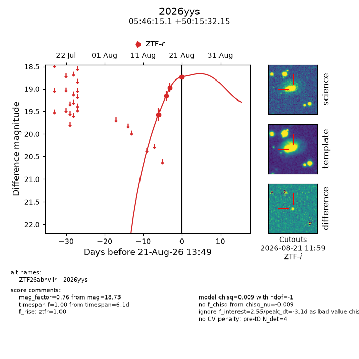
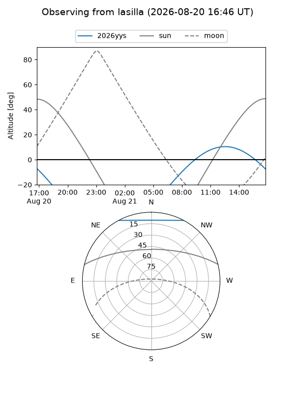
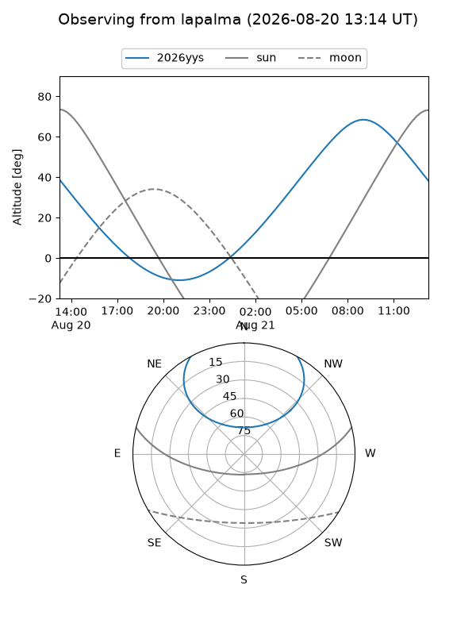
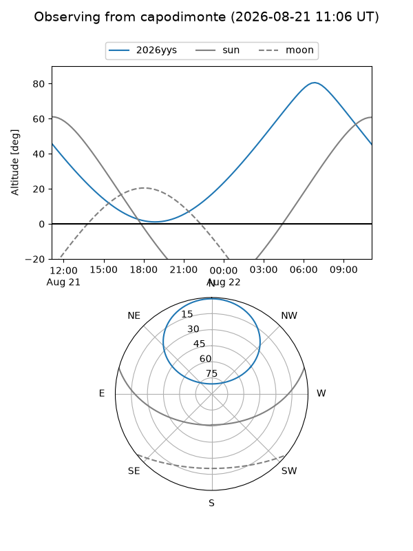
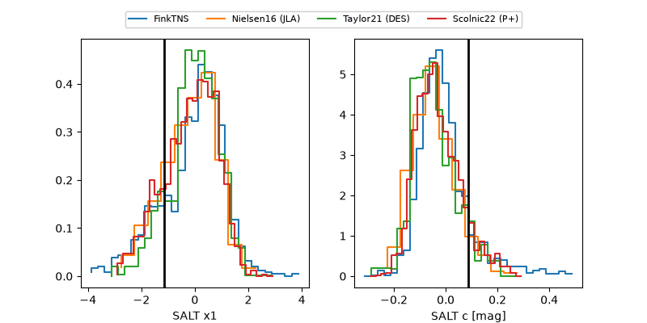

2026yys
Target 2026yys at 2026-08-21 13:51
Aliases and brokers:
FINK-ZTF: ztf.fink-portal.org/ZTF26abnvlir
Lasair-ZTF: lasair-ztf.lsst.ac.uk/objects/ZTF26abnvlir
ALeRCE-ZTF: alerce.online/object/ZTF26abnvlir
YSE-PZ: ziggy.ucolick.org/yse/transient_detail/2026yys
TNS name: wis-tns.org/object/2026yys
Direct TNS query: direct search
alt names
ZTF26abnvlir (ztf,fink_ztf)
2026yys (tns,yse)
Coordinates:
equatorial (ra, dec) = 86.5628,+50.25893
equatorial (HMS+DMS) = 05:46:15.06,+50:15:32.15
galactic (l, b) = (161.6241,+11.00885)
Flags:
TNS type: nan
peak dt: -3.1
Photometry:
last ztfr=18.73
4 ztfr detections
Lightcurve

Visibility



Additional plots
